来源：https://tnqr6xnium.feishu.cn/docx/NM57dMnudoVU41xev4ecjpa3nge
大家好啊，我是老朋友易寒。生财有术航海小红书教练+3篇精华帖作者。
1、0基础做小红书旅游号，7天成交6w+
https://mp.weixin.qq.com/s/EaV6FU4Wa_uKXmeZcWbSSQ
2、小红书做新西兰旅游半年销售额260W+，我的经验分享和新人入局建议
https://t.zsxq.com/p1tve
3、小红书做海外游学，2个月利润50W+
https://t.zsxq.com/qWaGs
先感谢亦仁老师，创办了生财有术星球，这里真是卧虎藏龙，通过分享我的生财经历，在这里认识了不少圈友。特别要说的是，我目前团队里的成员，都是在生财认识的圈友。
很久没发帖子了，一直忙着做新西兰旅游和英美游学。年底了，和大家分享一下我今年做新西兰旅游，在生财有术圈友 @许义 、@只做小红书高客单的珍妮 、@创业从不亏本的ivy、@Jennifer 、@海里 等人的帮助下，逆转困境的经历。
今年8月，我在新西兰开了一家旅行社。
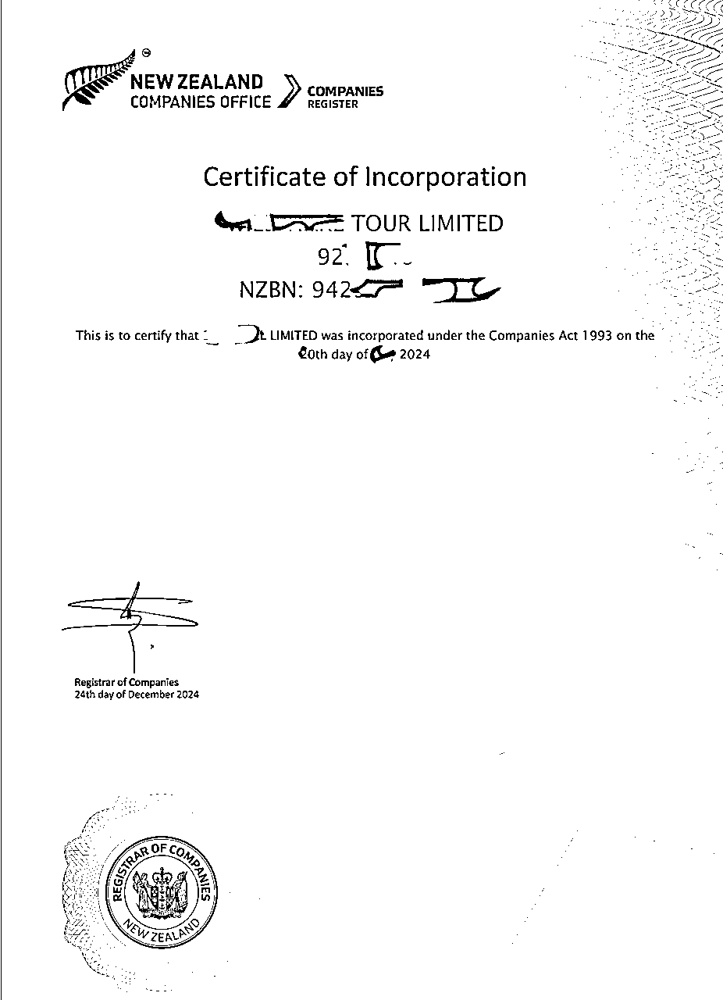
目前的单子排到了明年3月份以后，这是部分订单截图：
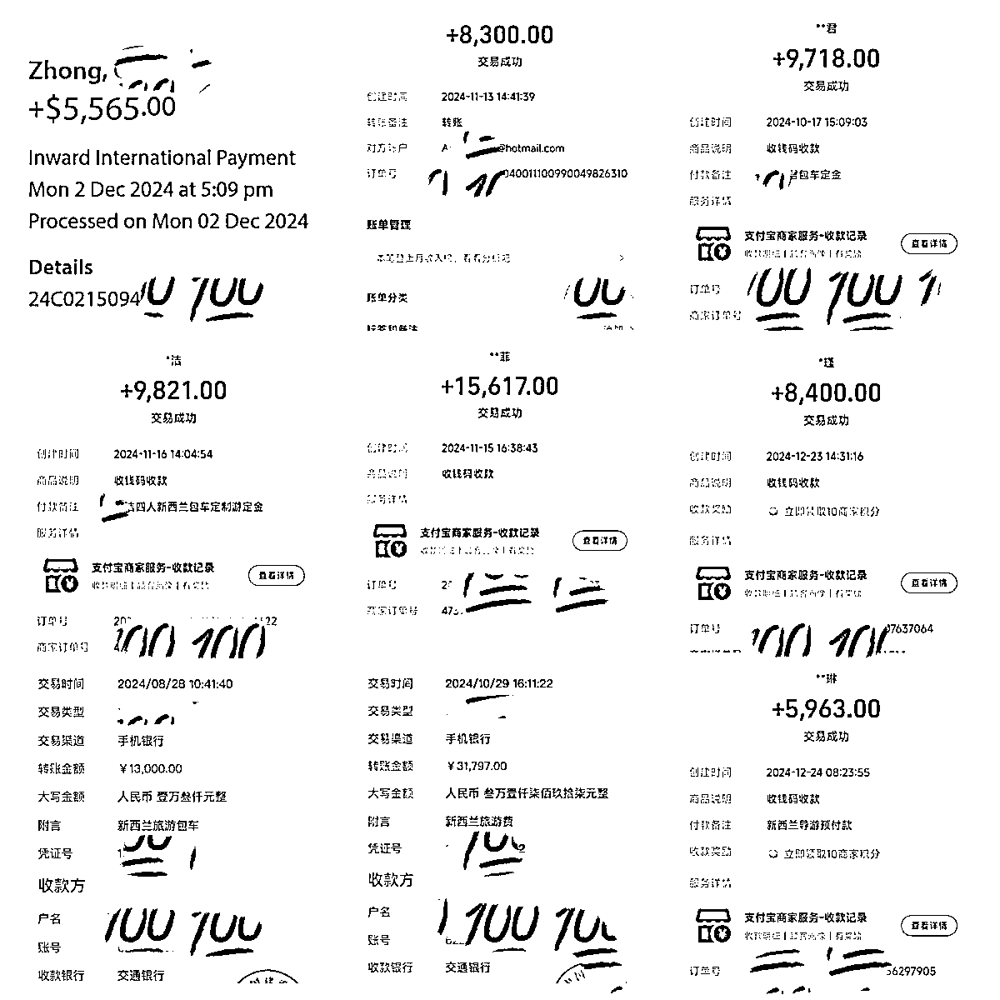
现在发展的还不错，但这一年走过来，经历的艰辛和坎坷，只有自己知道。
任何项目都是有红利期的，一般只有半年或者一年。2022年底到2023年11月，算是小红书旅游的红利期。红利期的时候，很多圈友咨询我。
我都说：旅行社是最没有门槛的行业，你查下高德地图，你家方圆几公里内，必然有一家旅行社。现在是红利期，生意好做。马上就卷起来，业内会死掉很多家。你如果不是抱着长期的心态，也没有业内人士的加成，基本赚不到钱。
2024年初开始，小红书旅游开启了“困难模式”：
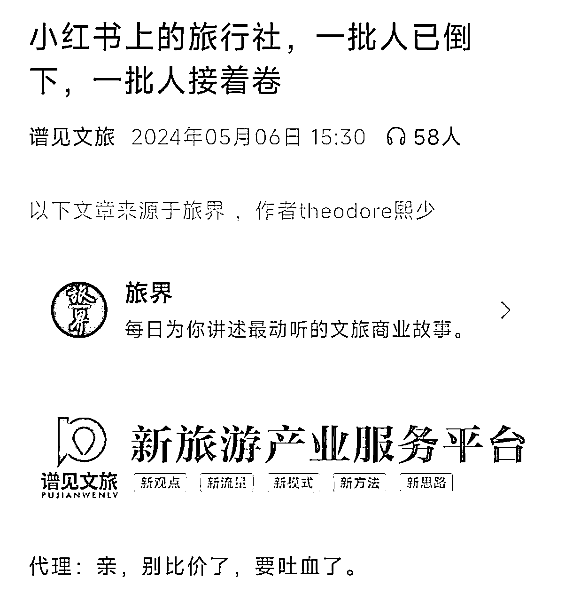
旅游行业也是哀嚎遍野：
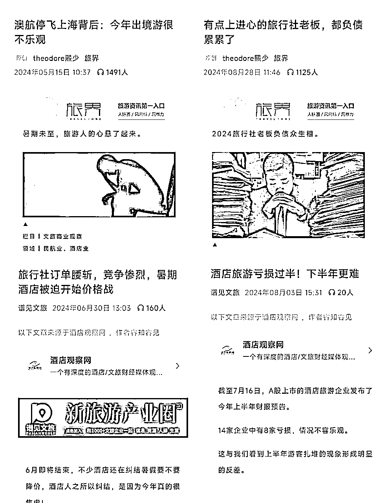
当年红利期的时候，很多人做得风生水起，现在退潮了，沙滩上一群裸泳的。
随便截几张图：
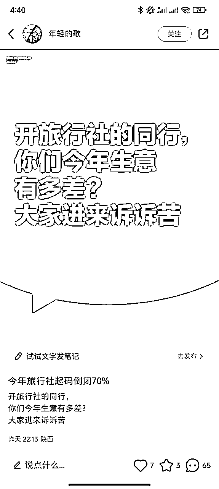
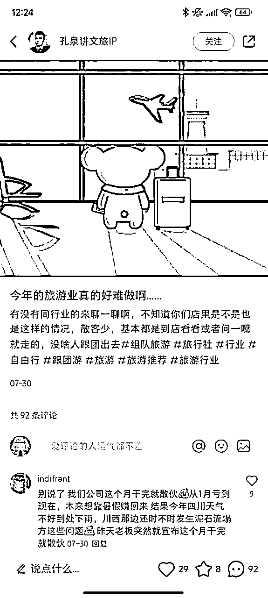
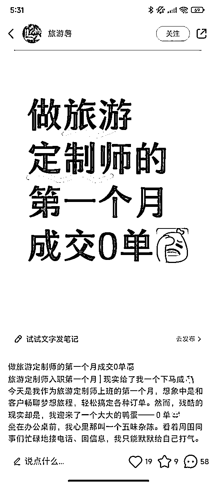
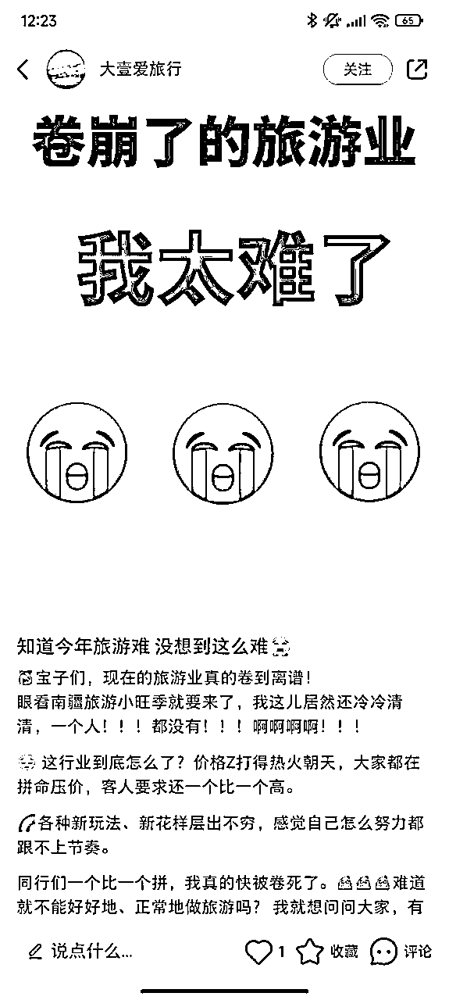
2023年的红利期，我也是做的很爽，就是无脑模仿爆款笔记，出了好几个小眼睛过2万的笔记。成交也很爽，每加10个微信，能出1-2单。
定制游，把2家旅行社塞爆单了。跟团游，用半年的销售额，在全年的代理商销售榜排名第七。跟团游，我对接的是新西兰最大的华人旅行社，每年接待客人数量1W+。
但是2024年1月份以后，业绩惨不忍睹。
具体表现在：
明显发现，入局新西兰旅游的商家增加了很多，加一个微信的成本，从2023年的8块钱，涨到后来的60块钱。
模仿爆款笔记也不灵了，平台上只要出一个爆款图文，立马大量商家去模仿。
比如，这个圈圈套圈圈，小红书到处都是。
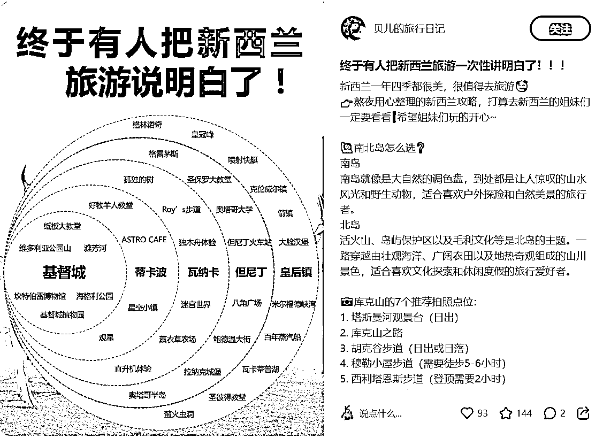
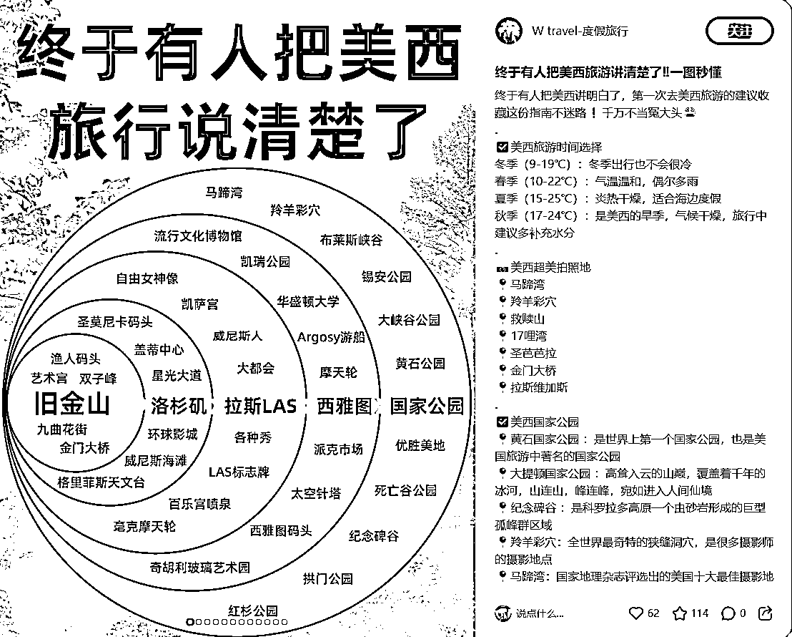
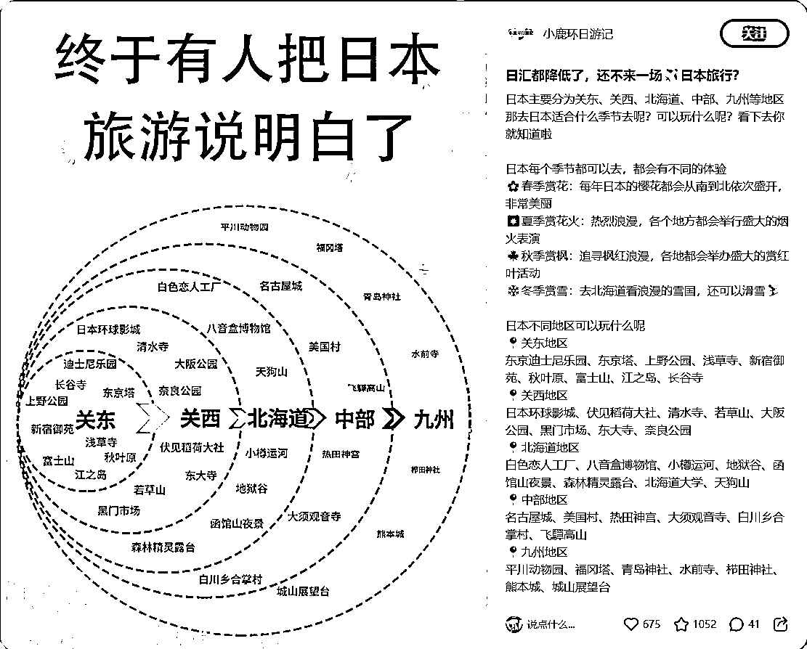
还衍生出了好多变体：


小红书旅游真是卷出花来了，一个圆圈套圆圈而已，竟然可以变成这么多个版本。
我还遇到了小红书的8月新规:
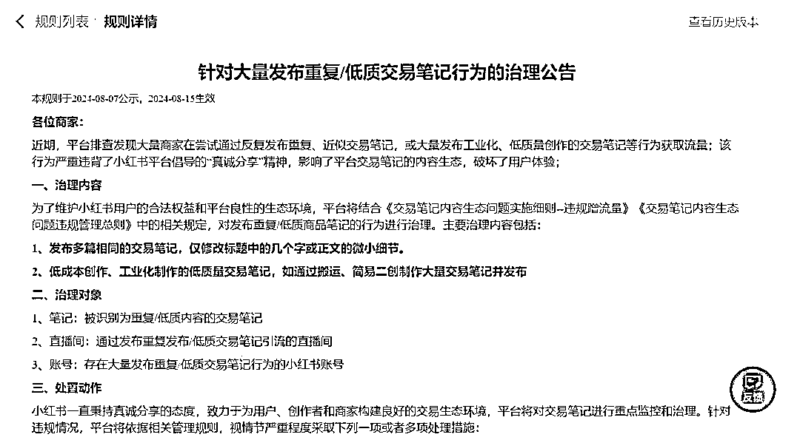
自己抄自己的笔记，被认定为抄袭。辛辛苦苦做的2个账号，全部永久限流。
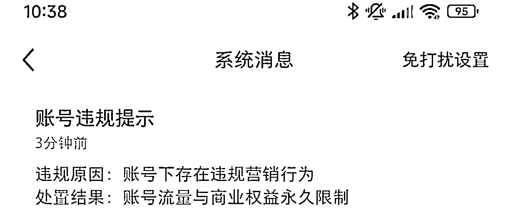
找客户经理多次申诉无效，自己抄自己也不行。
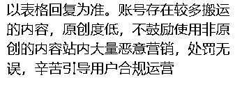
小红书旅游企业号是非常难认证的，一张营业执照只能认证2个企业号。无奈之下，只好注销了2个企业号，重新认证新号。
真的是屋漏偏逢连夜雨，船迟又遇打头风。
因为商家增多，比价严重，大家都是图文笔记，产品也一样。旅游市场花样比较多，我们坚持品质游，就没法比价。
价格战是没有底线的，我是坚决不卷价格。
我代理的产品是跟团游和定制游，但是供应商的产品跟不上变化。
跟团游：
疫情后，出境游发生很大的变化。人与人之间的距离感变得很强，从之前的大团游，变成了10人以下的小团，或者是2-4人的家庭出游。
咨询都是要8人以下小团的：
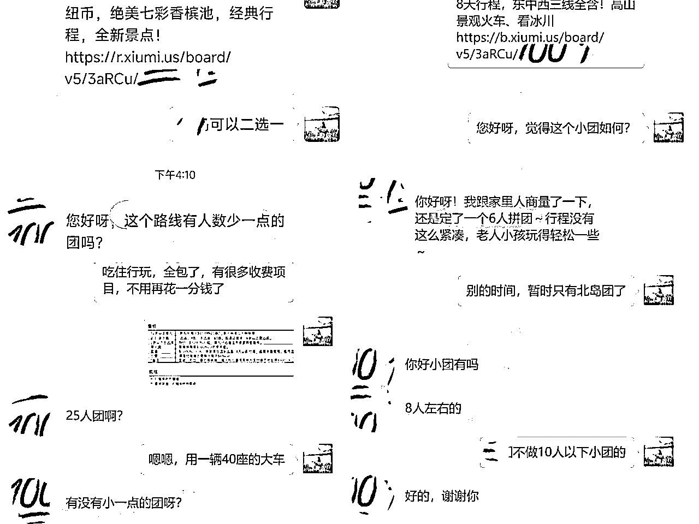
而跟团游合作的新西兰旅行社，一直都是大巴团。大旅行社，船大不好掉头。我去沟通过多次，由于各种客观原因，他们没有开小团的计划。
这就造成客资的极大浪费，而我加一个微信，小红书聚光是要花60块钱的，还不算客服的时间成本。
疫情前，我在新西兰带团的照片。都是40多人的大巴团，各个年龄段的游客都有。
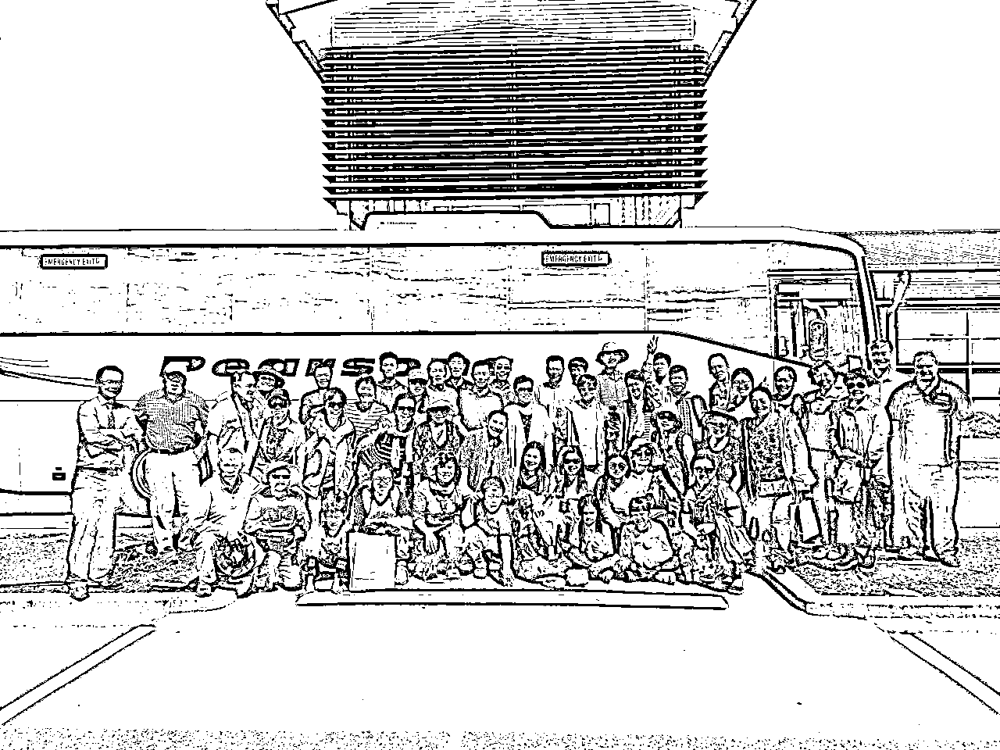
疫情后，大巴团变成了老年团，人数也从40多人，变成了20多人。
这是一个新西兰导游的带团照片，可以看到，大车空位很多，客人都是老年人。
而老年人，是很少用小红书的。
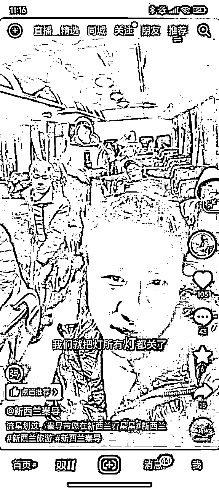
定制游：
合作的2家新西兰旅行社，不太认可引流的作用，我辛辛苦苦引流来的客人，只给我非常少的佣金。前期引流成本低，盈利还可以。后面引流成本飙升，成本都覆盖不了。
这里插句话，也蛮感谢他们对我这么抠的，逼着我自己开旅行社，才发现利润真香。
当时，我做得非常痛苦，曾经连续3个多月0开单。而我在新西兰生活，一个月的家庭开支就要2万多。好在那段时间把英美游学跑通了，要不然，就只能靠存款生活了。
小红书做海外游学，2个月利润50W+
https://t.zsxq.com/qWaGs
我知道新西兰旅游会变难，但从没想到，会这么难。
跟几个圈友聊的时候，我多次想放弃。但一想到自己定居新西兰的初衷，还是默默给自己打气。
面对困境，精神上先不能垮。我经常翻生财有术的精华帖，看圈友们在做项目中，是如何面对困境的。
人在最困难的时候，最需要的就是精神支持。
很多个焦虑的夜里，靠的就是圈友们的帖子，给我坚持下去的力量。我看到很多圈友在做项目过程中，都经历过各种各样的困境。那些成功者都是坚持到底，在绝望中寻找希望，最后才是绝处逢生，跑通项目赚到钱。我明白了，创业都是九死一生，眼前的困境，是创业者必经的“一道坎”，迈过去，就升级成功，进入下一个阶段。
既然是必经之路，我就要坚持打怪升级，更加不能放弃了。
我始终坚信，没有不好的项目，只有不好的创业者。每年几十万中国人来新西兰旅游，从业者肯定能赚钱，只是我暂时没找到方法。
想，都是问题。干，才是答案！
怎么干？先找方向！
做生意找方向，其实很简单：找一个赚钱的同行，模仿他就行了。
出境游这么卷，谁在赚钱呢？
我先是看到了许义老师在生财有术的这篇帖子：
永远只做5%的生意
https://t.zsxq.com/A8ykW
帖子里面，他提出了旅游企业突破内卷的方法：只做5%的生意。
通过许义老师，我又看到一个很精彩的案例：
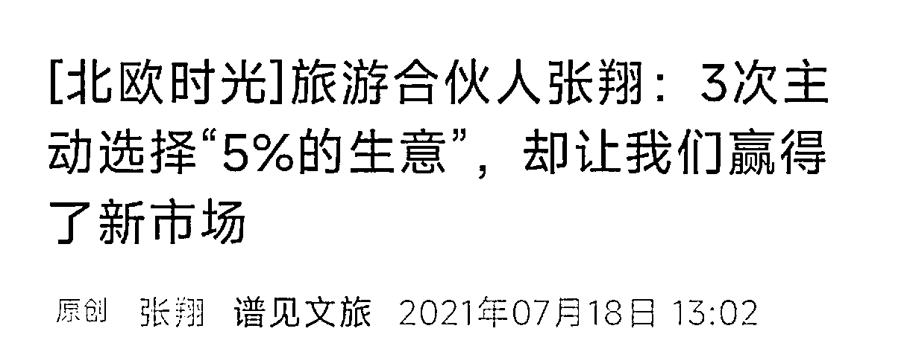
在北欧旅游的众多产品中，张翔专注北极圈，只做5%的生意，2018年营业额达到400万欧元，亚洲员工数量18人。
找到方向之后，经过一段时间的市场分析，我决定放弃做代理，自己开一家旅行社，只做5%的生意，做好轻奢小包团这一个产品。
后来发现，亦仁老师也是这样做的：
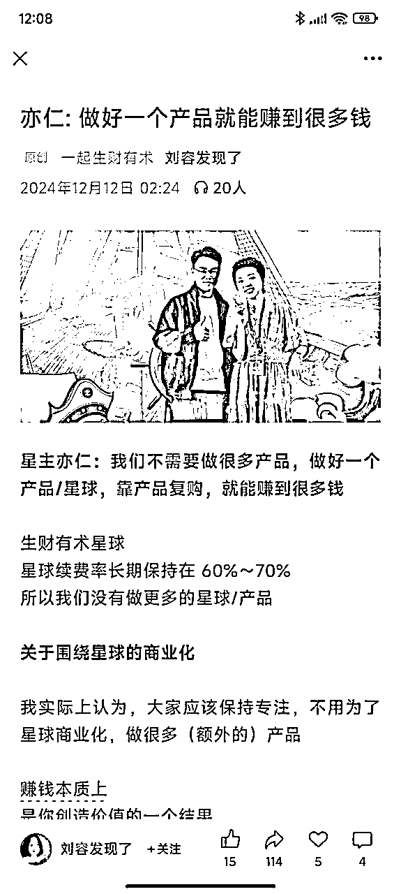
生财有术真的是一座宝山，值得我们每一个圈友深挖。
明确了只做轻奢小包团，我就开干，主要是从下面3点做调整。
旅游业卷价格，因为他们的产品同质化，报谁家都没多大的差别，那顾客必然卷价格。
但是，旅游的客人，真的在乎那点差价吗？特别是新西兰旅游，能花大几万来玩的，应该还是在意品质的，不会计较那点差价。
新西兰旅游局的研究也证明：来新西兰旅游的中国游客，消费实力很强。
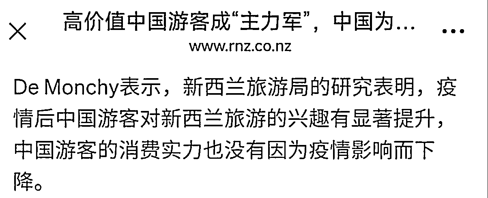
价格战的根源，可能还是产品的问题。
这一点，我在许义老师的公众号文章里得到了证实。
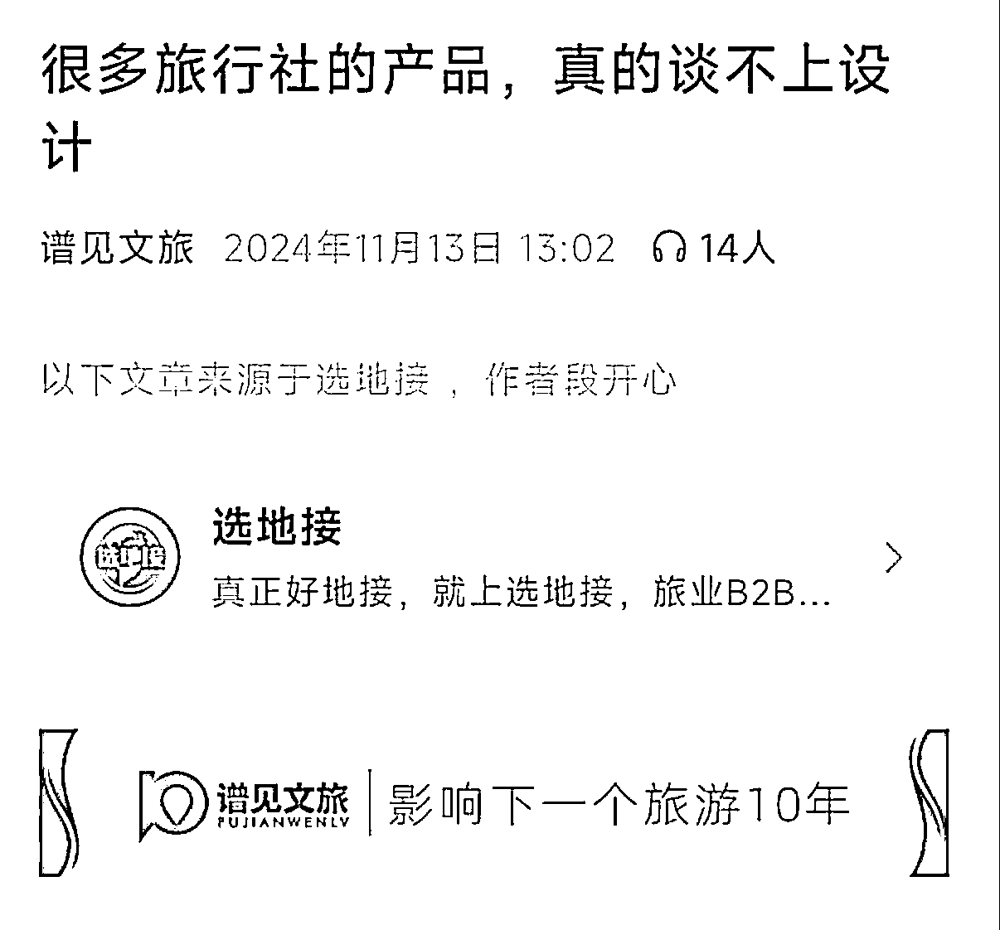
作为代理，我只能被动的接受地接社的产品。想要做有特色的产品，必须自己去当地接社。
8月份，我开了一家旅行社，先买了一台埃尔法保姆车，办好了营运手续，自己当导游，打磨产品和服务。
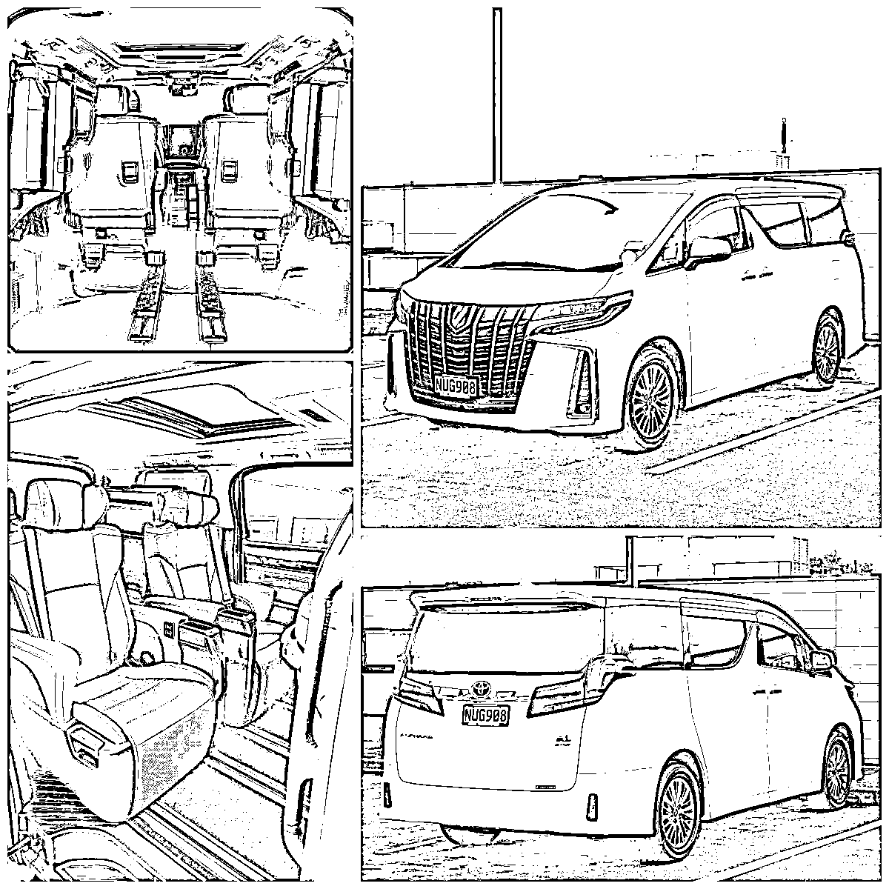
销售界有个非常经典的7P法则，7P法则包括：产品（Product）、价格（Price）、促销（Promotion）、地点（Place）、人群（People）、有形展示（Physical evidence）和过程（Process）。
根据7P法则，我从以下6个角度，改进了产品和服务。
我每到一个地方，就去问I-site的工作人员，问导游朋友，问当地人，了解有哪些好玩的地方，然后有的是自己去体验，有的是带着客人去体验。
比如，皇后镇有个客户超好评的项目，是当地一个老外导游告诉我的。这个项目非常火爆，但由于全程都是英语，去玩的中国人很少。好几家华人旅行社都去找过这家公司的老板，但是种种原因，一直没开通中文服务。
听她说完，我第二天就去参加了这个项目，体验确实非常棒，简直是完美。我是有备而来的，当时全程录音，回去后用中文讲解了一遍，然后将录音导入自动导览机，供客户使用。

这个项目我卖得很好，客户的评价也很好。有好几组客人参加完之后，给我说，仅凭这个项目，就觉得选择我的团，选对了！
打通了小红书笔记，我能获得源源不断的流量，而我的接单能力有限，因此我就能把非目标的客户筛选掉。
写笔记的时候，我就强调，我做的是轻奢定制游，面向的是要求品质的客户，价格不会低，但绝对超值。
加了微信之后，我会在5句话之内报价，非目标客户看到价格超出预算，一般就不会回复了。
根据我们的统计，加微信的客户，90%都在报价后筛掉了，10%的客户能进入下一阶段。
这就大大减轻了客服的工作量，更好的为目标客户服务。
我带的每个团，都仔细询问客人，对每个景点、餐厅、住宿的评价，根据他们的反馈，我研发出了亲子路线、年轻情侣路线、老年人路线。根据客户的不同需求，能很快设计出让客户满意的行程。
有好几组报团的客人都说：问了好几家，我的价格是偏贵的，但是我的行程设计是最专业的，感觉我比他们自己都更了解他们想要什么。别家的行程都是平淡无奇，我的行程却让他们眼前一亮。
行程结束后，客户也反馈很好。目前为止，客人结团后，对我推荐的餐厅、景点、住宿等，都很满意，有很多地方，0差评。
比如，新西兰南岛的酒店，客人反馈没有中式早餐。我在基督城市区找了一家四星级酒店合作，可以给客人做早餐：包子、油条、韭菜盒子、豆浆、稀饭、小菜。
做行程的时候，给客人一介绍，100%都要求定这家酒店。
之前我是代理，定制游、跟团游都有，想把来咨询的客户都成交。
这样做，每一个加微信的客户，都是我的目标客户。咨询量很大，客户还觉得我是个杂货铺。
现在，我自己开旅行社，专注高客单群体，逐步打出自己的特色。
比如，我们发现，客人都很介意酒店的烧水壶。
很多客人带的硅胶折叠水壶，但是烧水一股味。
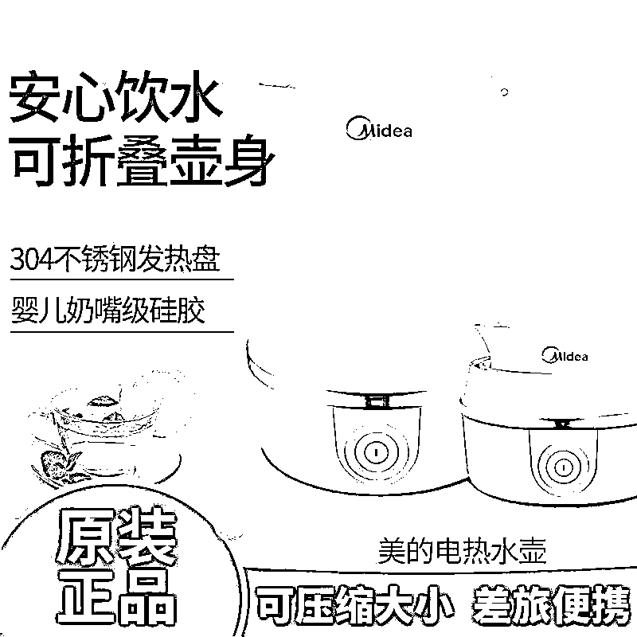
我们多方对比，找到了这款便携水壶：
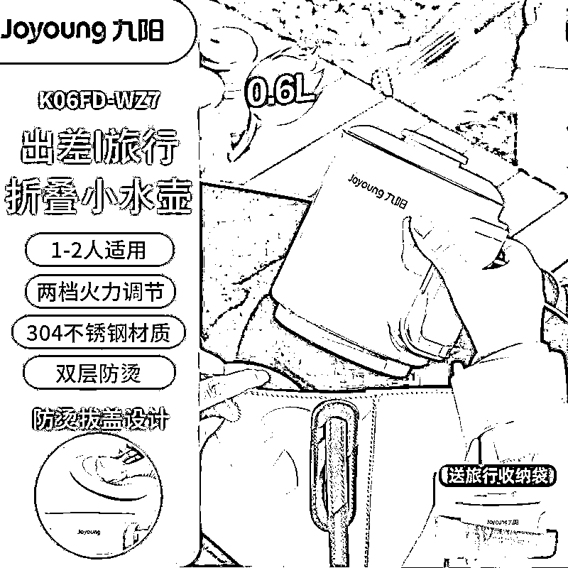
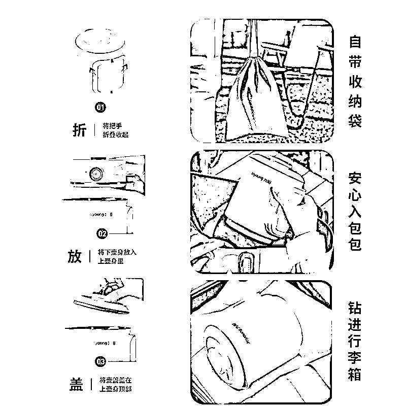
在水壶上，我们印上了旅行社的Logo。客户回国后的每次使用，都是帮我们免费宣传。
在带团过程中， 我经常和生财圈友交流带团心得，也向国内的旅行社老板们请教，一起做出了新西兰带团的标准服务手册（SOP）。
在客人出发前、行程中、行程结束后的整个客服流程中，我们拆分了很多细节。每一个细节都精益求精，力求让客户满意，最好是满意超出想象。
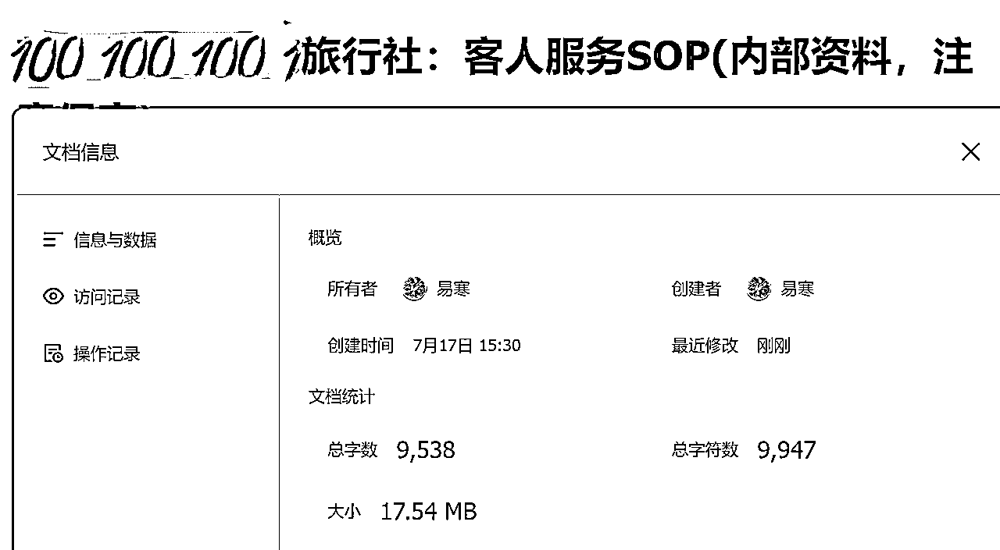
有了这套SOP， 就可以确保团队里的每个导游都能始终如一地提供高质量服务。
旅游的门槛低，价格战非常厉害。

面对价格战，如何成交，可以看我这篇精华帖的第六部分：如何成交高客单定制游客户？
小红书做新西兰旅游半年销售额260W+，我的经验分享和新人入局建议
https://t.zsxq.com/p1tve
和这篇精华帖的第五部分：高客单成交心法
小红书做海外游学，2个月利润50W+
https://t.zsxq.com/qWaGs
这两部分已经详细的介绍了新西兰旅游和英美游学，是如何成交高客单客户的。
小红书的打法变换非常快，我之前做小红书的方法不灵了，笔记的小眼睛经常只有200以内。
在生财圈友珍妮子的指导下，我的小红书运营能力得到了提升，经常出爆款。
前面提到了，海外旅游是小红书最卷的赛道，没有之一，和留学赛道一样卷，也比卖保险等赛道卷！
面对小红书上很卷的赛道，怎么做笔记能拿流量？
这里介绍2个我们实操效果非常好的方法：
我们看到别的行业的爆款笔记，可以想一下，能不能用在自己的行业。
举例：先看这两个爆款笔记：
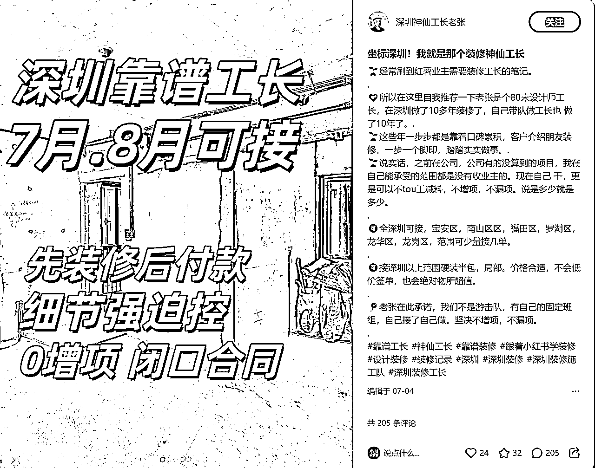
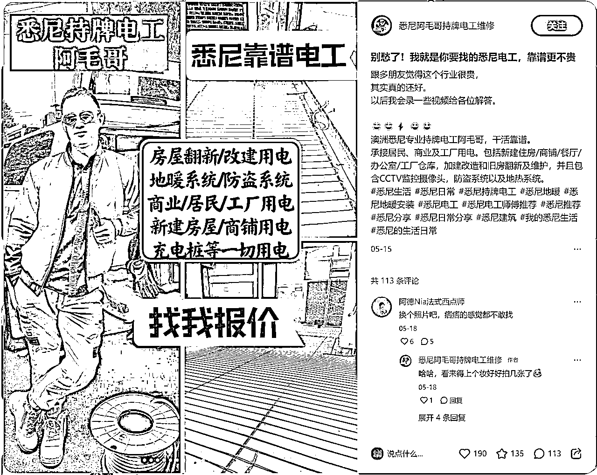
看完，你有什么想法？
对啊，坐标新西兰，靠谱旅行社嘛！
我发完笔记，效果是这样的：
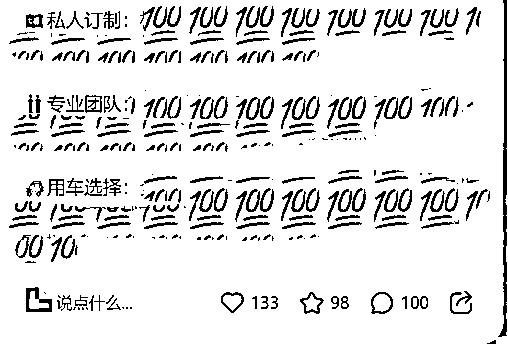
关键是，信任感特别强。
比如这个客人，在我晚上睡觉的时候，申请的好友。等我早上通过好友后，居然很快就回复了，跟我语音了18分钟，一定要报我的团。
注意：微信里是新西兰时间早上9点，当时可是北京时间凌晨4点。
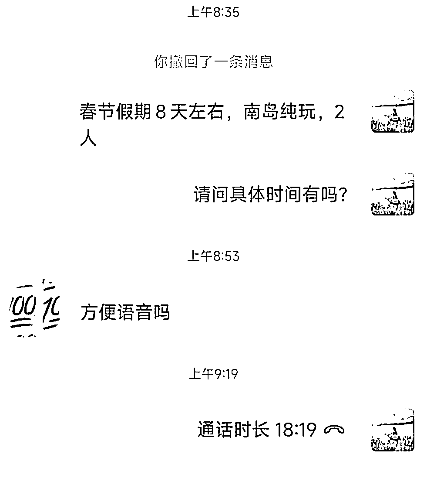
如果过多展示旅游业的笔记内容，会泄露过多自己行业的隐私。
我之前做过代购，和新西兰花胶、海参工厂很熟，6月份的时候，专门研究了这个赛道。但后来旅游做起来了，就没时间做这个赛道了。
所以这里就以陈皮赛道/新西兰花胶赛道举例，大家可以看到我的思路。
（此处举例已获得珍妮子授权）
这时候不能只盯着花胶赛道去找爆款，因为花胶就是带货嘛，所以我们要看看其他正在带货的赛道是怎么宣传自己，比如看看陈皮，月饼，燕窝等赛道。
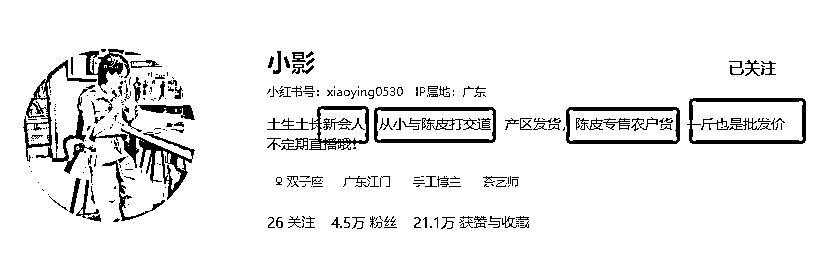
先模仿他的简介来写我们的人设，红圈处就是重点：
新会陈皮很有名，
叠加
【农户发货，一斤也是批发价】，这就是对客户展示自己的朴实和渠道价值。
我们把这个人设一换，就是：
新西兰生活X年，自有新西兰X鱼胶工厂，已拿到XX质量和健康认证，产区发货，绝不缺斤少两、卖假货，一斤也是批发价。
接着我们来看他的笔记特点，看有哪些内容，值得我们改写模仿：
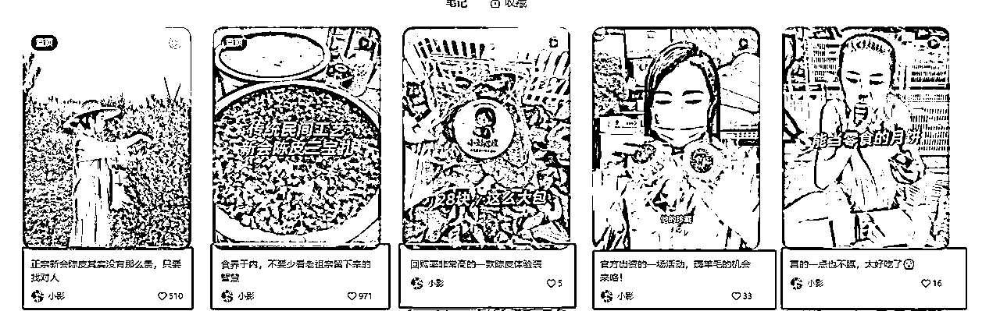
现在看第1排的图。
红圈部分的内容主要分为两类，
第1类是直接拍原产地的视频，说“原产地的食材，实际上没有这么贵，只要找对人”。
适当推出体验装、给客户薅羊毛的机会。
因为任何客户都会想要薅羊毛的机会，所以我们可以多拍类似的视频。
其次蓝圈部分，主要晒平时如何用陈皮做美食？
以及可以让小孩出镜，晒吃美食的一个体验过程。（因为每个孩子都是比较可爱的，让他们出镜可以帮我们获得客户的好感。）
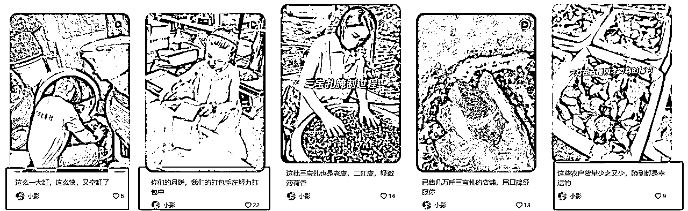
再看第2排，
主要晒打包记录就行。这样会显得更加真实。
而且可以多提到：【我们是限量的，不是每次都能够拿到这么大批量的好货。】
重点看红圈和蓝圈处的案例，改编一下就OK。
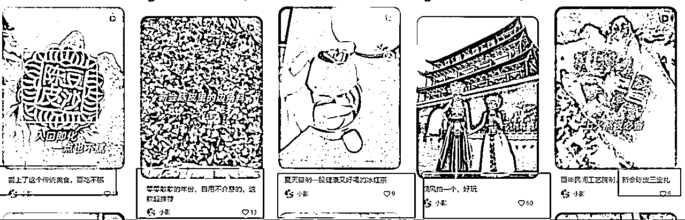
再看第3排。第3排红圈部分依旧是晒体验装，也就是【自用不介意的话就可以买这种散装的】。
蓝圈部分晒厨艺依旧是体现自己的朴实。
绿圈部分就是晒自己的日常了，增加客户对我们的信任。
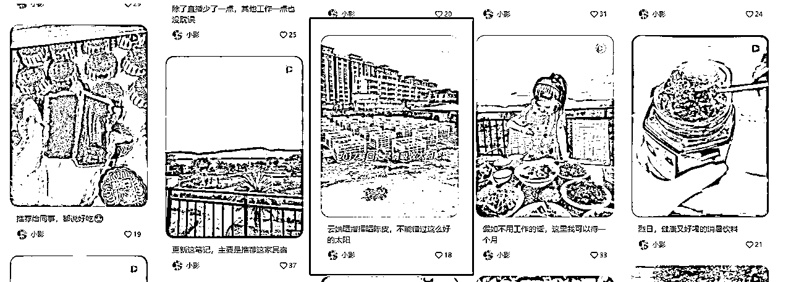
这一条红圈处主要晒制作过程，让别人知道【我们这个是很干净的，没有科技狠活。】
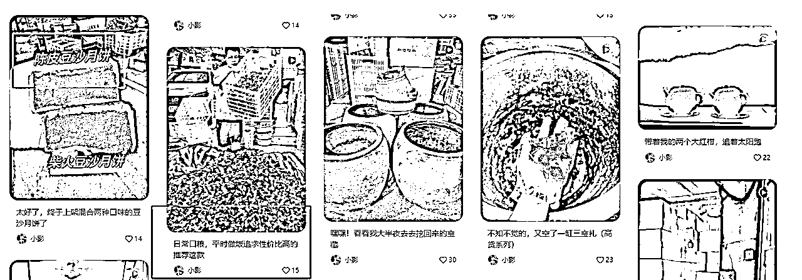
红圈处依旧是晒体验装、和自己的厨艺，比如陈皮豆沙月饼。

这一行红圈处主要是晒内幕，比如说【越丑的陈皮越好喝。】
换到花胶赛道主要晒花胶行业的内幕，但珍妮不知道有什么内幕，所以在此不做建议。
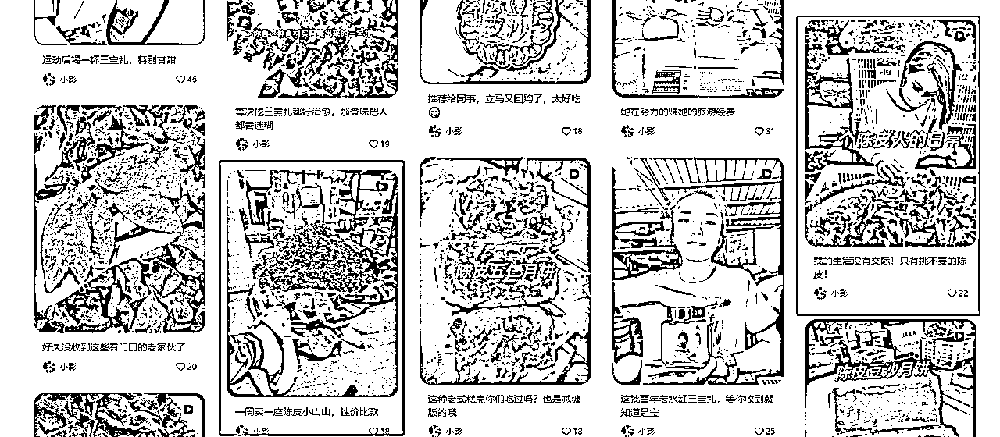
依旧是晒体验装，还有晒我们努力工作的日常，体现自己的朴实。
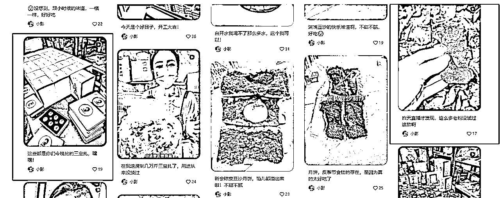
晒我们的新货，比如直播间没有试过的货，以及
【在直播之后，一个发物流的情况图】，显得我们的东西被热卖的感觉。
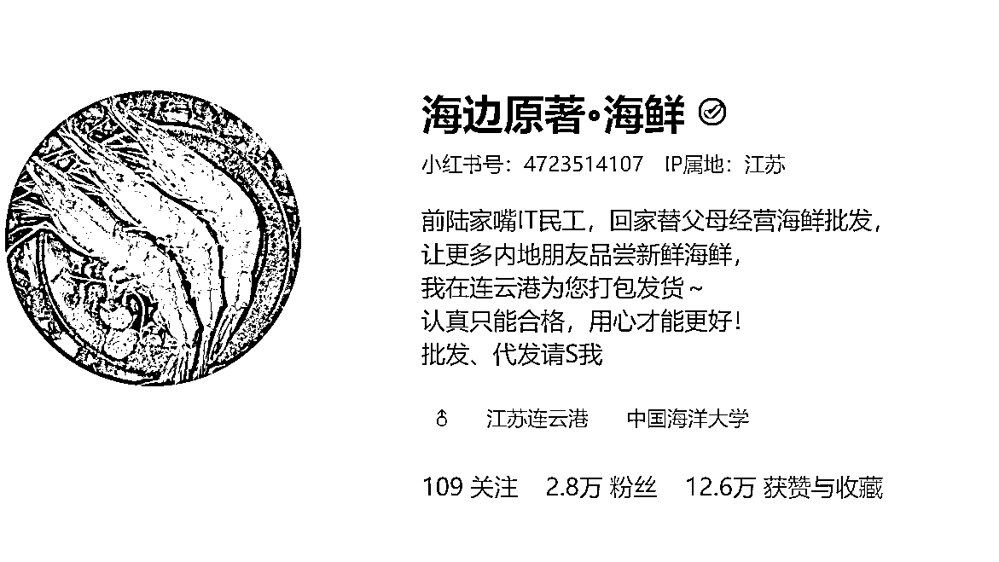
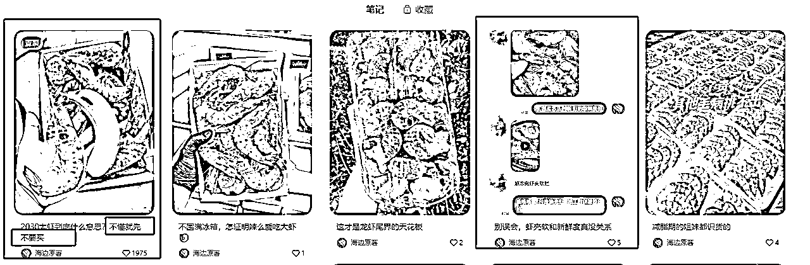
一定要有一篇置顶笔记来介绍自己的产品，让大家【不懂就先不要买】，也就是蓝圈处所示的置顶笔记。其次是可以通过晒和客户的聊天记录截图，尤其是【如果客户来投诉或者抱怨】，这些我们也是可以大胆晒出来的。
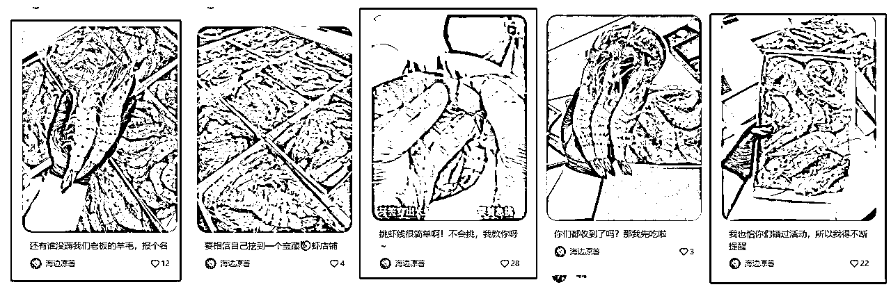
这几张图的流量密码，依旧是晒体验装。或者是薅羊毛。
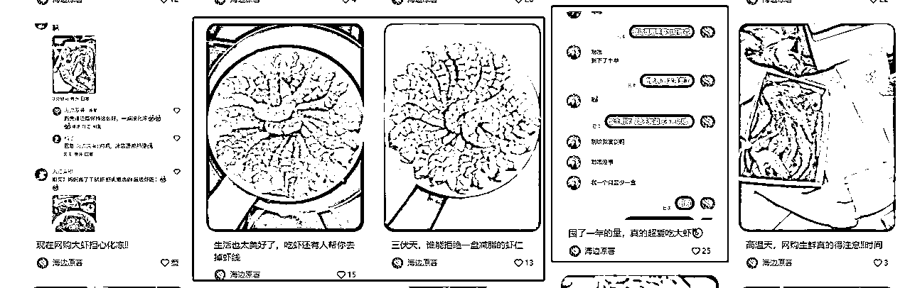
这一排的流量密码就是晒自己的朴实，就比如帮人去虾线。
以及晒自己懂厨艺。
还有晒自己和客户的聊天记录截图。
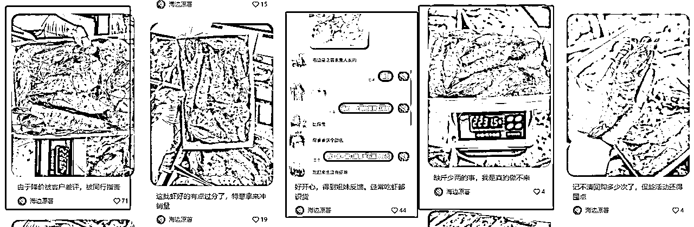
流量密码：晒同行和自己的关系。
晒自己绝不缺斤少两，这也是展示自己的朴实。
【晒客户如何识货：识货的客户和咱们的聊天记录】
这也是一个引流好方法。
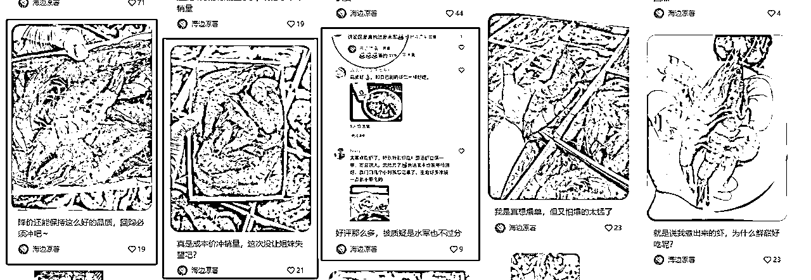
流量密码，晒【即使大促销也能够保持好的品质，以及被人质疑是水军。】
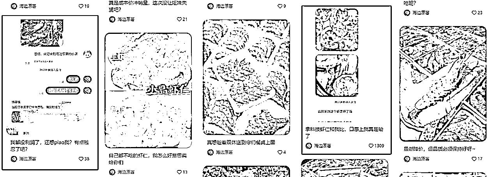
晒【自己被客户白嫖，体现自己非常老实敬业，但是现在遇到了无良客户】可以引起其他买家的同情。
晒【自家产品和科技狠活相比的区别。】
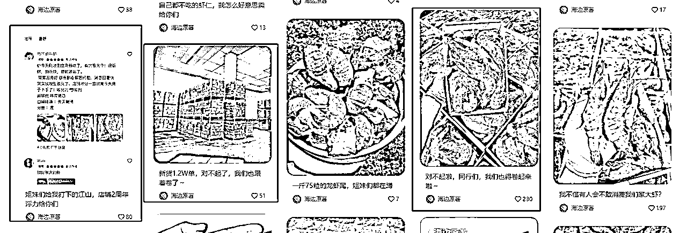
晒【自家的产品有多卷以及发货过程】。
还有就是蹭促销装的热点，比如说，【店庆两周年福利给你们】。
下面这篇笔记很有意思，值得分析：
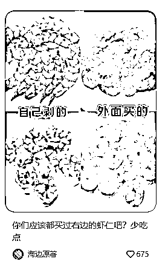
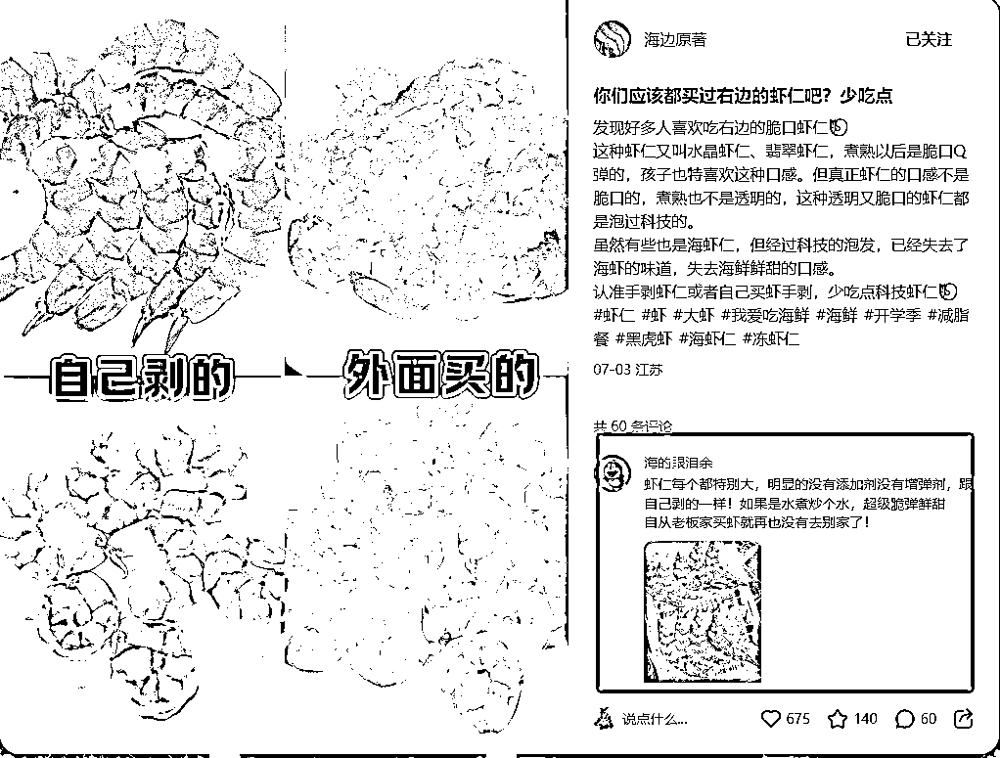
通过左右对比图的形式，晒自家的产品和科技狠活。
文案里面讲一下科技狠活是什么，评论区找以前的买家，或者前期找水军帮忙评论一下，晒一下实物图片。
控制一下评论区的节奏。后面就会自动有人来问了。
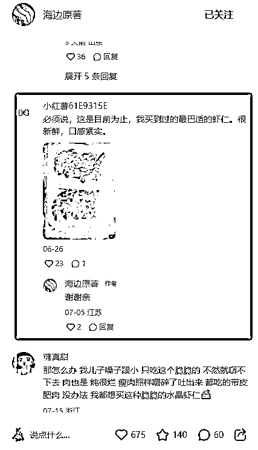
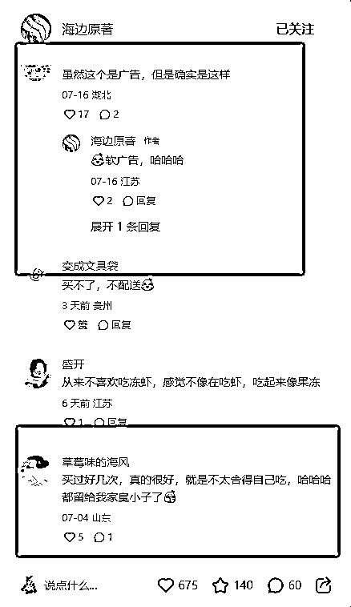
这一步是把别人的产品和咱们的产品做一个对比图，拿在手里，展示【咱们的产品的质量有多好，或者说这个产品大小有多大】
放到花胶行业也是一样的。
比如：别人的花胶是多小，我们花胶有多大，但是我们的价格并没有比别人贵很多。
这一步我们可以把自己改成花胶影帝，然后晒自己吃花胶的样子。
对于生蚝来说，要晒重量，比如说【半斤大】。
对于花胶来说，因为花胶本来就比较轻，我们就要拿尺子去量它有多少厘米，然后在图片里面【显示出尺子的长度】出来。
【注水】，这种科技狠活，永远都是热点。
做花胶赛道，也可以说一下热点，就比如说有些商家，用一些鱼的小边边去合成花胶之类的，也可以适当吐槽一下。
看上图红圈这个标题，它就是一个爆款标题：【谁没有用上我真的会流泪的】。
这个标题，大家应该从到22年就经常见到了。
像养生产品赛道，尤其是花胶赛道，其实还有很多人，他们都没有掌握爆款标题的格式。
他们要么植入的标题是纯搜索流量的标题，
要么植入的标题不是爆款标题的格式，没有搜索流量，就纯粹随便写写。
比如一个卖四件套的，他的标题竟然是“敲好看的”。
既没有包含搜索流量“四件套”“被套”啥的，也没有爆款标题格式。
纯粹靠自家产品图出圈。。
但凡懂取标题，数据会更好。
实际上一个好的标题，它一定是植入了我们的搜索流量，比如植入了花胶这个词，也一定植入了爆款标题格式，比如说【谁没有真的吃上我真的会流泪】。
爆款标题格式，我们直接在美食行业去搜索就行了，比如小红书搜索“美食爆款标题”。
流量密码：福利捡漏。
因为谁都喜欢捡漏。红圈处【我先替谁谁谁睡了，我先替谁谁谁吃了】，这种标题都是爆款标题的格式。
平时要记得晒【自己的赠品，都被人抢购一空】的这种视频笔记。
突出自己的产品非常大卖的感觉。
而且要弄一些限量款，比如说【洛丽塔这个系列的毛毯送完就撤了】。
如果是做花胶的，也要对花胶加以区分，做成多个款式。
这种就是：故意颠倒平时说话的顺序，比如：
平时说话一定是买四件套送毛毯。
他说买毛毯送四件套，
那肯定就会吸引别人点进来看。
我们也可以买一个很便宜的小东西，然后送花胶，这样也会吸引到别人来看。
这个标题，就是提醒大家：【买XX，不要花冤枉钱】，
然后去拍自己的产品，弄一些实拍图，最后在评论区控评一下就行了。
评论区最好是先安排几个人问怎么买，带一下节奏。
一定要植入送礼对象：妈妈，孕妇，产后妇女，领导等等。
在以前的分享里有和大家提到过，跟送礼有关的礼物，一定要植入具体的节日和送礼的对象。
比如说母亲节就植入妈妈。
过年就植入领导。
如果跟节日无关，就要植入孕妇、产妇等等这样的词。
或者还可以植入具体的孕产时间，比如：孕三个月和孕15周。
下面标题是上述爆款中的一些标题，和部分珍妮改编后的标题（如果超出字数，可以适当删减或者做成封面标题）
回购率非常高的一款陈皮体验装
零零散散的月份，自用不介意的，这款陈皮超推荐
日常口粮，做饭追求性价比高的推荐这款陈皮
一周卖一座陈皮小山山，性价比款
降价还能保持这么好的品质，大虾回购必须冲！
搬仓库福利捡漏！20厘米长的新西兰花胶！
官方出资的活动，陈皮薅羊毛的机会来啦
还有谁没薅我们花胶老板的羊毛，报个名
我也怕你们错过大虾活动，所以我得不断提醒
大虾真是成本价冲销量，这次没让姐妹失望吧
姐妹们给我打下的江山，大虾店铺2周年浮力给你们
云端晒指挥晒陈皮，不能错过这么好的太阳
快来云指挥我们做花胶！这么大的深海鱼！
老祖宗留下来的养生智慧，花胶银耳羹，我替你们吃了
真的一点也不腥，代购的这款新西兰花胶好吃到流泪
夏天自制一股低脂低卡养颜的花胶银耳羹
爱上了这款陈皮豆沙，百吃不腻
挑虾线很简单啊！不会挑，我教你呀
卖个虾还成了影帝了
昨晚直播才发现，还有很多陈皮老粉没试过这款啊
由于降价被大虾客户差评，被同行指责
别误会，虾壳软和新鲜度真没关系
别误会，花胶上有血真不是科技狠活
卖个虾都没利润了，还想piao我？有点残忍了吧？
屯了一年的量，真的超爱吃大虾
好开心，得到姐妹反馈，经常吃虾都识货
好评这么多，卖虾被质疑是水军也不过分
开学睡不上这个全棉三件套我真的会流泪的
母亲节礼物！送妈妈这款新西兰低卡花胶后我妈无语了
2030大虾到底什么意思？不懂先不要买
缺斤少两的事，我是真的做不来|吃虾必看
快试试20厘米长的生蚝当馒头吃的快感吧
半斤大一只的生蚝，我先替你们吃了
拿科技虾仁和我比，口感上我真是输了
你们应该都买过右边的虾仁吧？少吃点
生蚝肥？因为商家注水
正宗新会陈皮其实没有那么贵，只要找对人
这么一大缸陈皮，这么快，又空缸了
新货1.2w单大虾，对不起了，我们也跟着卷了~
对不起啦，大虾同行们，我们也得卷起来啦~
你们的月饼，我们的打包手在努力打包中
这些都是你们今晚抢的花胶，嘿嘿！
这些农户货量少之又少，蹲到这款陈皮就是幸运
姐妹们！！送的毛毯库存告急了！！扛不住了！
报告！等毛毯送完洛丽塔这个系列我撤了！！！
这么卷的嘛！买毛毯送四件套（此处放一个哭笑表情）
这个就无所谓了，就拍自己在新西兰晚饭后散步看到的晚霞，然后真人出镜一下就ok，证明自己真的在新西兰。
偷偷告诉你们，越丑的陈皮，煮着越好喝哦
新西兰工厂实拍，买花胶千万不要花冤枉钱了！
我的生活没有交际，只有挑不完的陈皮！
生活也太美好了，吃虾还有人帮我去虾线
三伏天，谁能拒绝掉一盘减脂的虾仁
产后，谁能拒绝掉一碗低卡补血的花胶
注：
以上是珍妮子关于带货相关行业如何宣传自己产品的打法分析，我把这个宣传方法改编后用到了旅游行业，引流了很多客资。
理顺了前后端，我的单子越来越多了。
但是，个人的力量是有限的，我一个人干了一家旅行社所有的岗位，每个月只能接2-3单，生意也没法放大。同时，总是在外面跑，没有时间陪孩子，心里也有愧疚。
我需要搭建一个团队，来接更多的单子。
但这件事，我是一朝被蛇咬，十年怕井绳。一直以来，我都是单打独斗，去年找人合作过，但结果不好。我是理工男、程序员、宅男，毕业后一直在大学里当老师，没有任何社会经验，识人能力几乎为0。
好在我有生财有术，取之不尽的大宝山，哈哈。
我联系了生财圈友陈铭IVY，她帮我招人、做工资方案、设计团队模式，很快，我有了前端引流和后端导游两个团队。
有了团队，接单能力放大，再也不用发愁单子太多了。
现在，我的小旅行社终于走上了正轨。从0到1已经完成，接下来就是从1到10、再到100了。
文章已经写了快1万字了，这里如果再细说怎么搭建团队，文章就太长了，争取下次有机会细细写一下，和大家分享。
现在消费降级，各行各业都很卷，新西兰旅游是非常罕见的高客单高利润赛道。新西兰旅游的前景，也非常好。
疫情后，每年20多万中国游客到新西兰旅游，且增长尤为明显。这都是经过筛选后的高净值人群。
新西兰旅游局的研究表明：
疫情后中国游客对新西兰旅游的兴趣有显著提升，中国游客的消费实力也没有因为疫情影响而下降。
越来越多中国游客开始追求优质的、高端的旅游，并且没有看到中国经济放缓对新西兰旅游需求的影响。
原文链接：https://www.rnz.co.nz/news/chinese/515633/article
一直以来，新西兰和中国的关系都很好，新西兰是第一个与中国签订自由贸易协定的发达国家。办过欧洲、澳洲等发达国家签证的圈友都知道，手续繁琐，且拒签率高。
再加上，下面这种事偶有发生，签证难度更大了。

新西兰旅游签不用现场录指纹，只需要网上提交扫描版材料。通过率高，一般2周就下签，给的都是五年多次往返签证。
早在2023年6月，新西兰总理专程到访小红书，见证了新西兰旅游局与小红书签订合作协议。
相比其它目的地，在小红书做新西兰旅游，是有官方加持的。
这篇文章到此分享完毕，能看到这里的，应该都是对旅游有兴趣的。
去年11月，从我当生财航海训练营的小红书旅游教练开始，不断有圈友加我的微信，咨询旅游如何入局。面对这些咨询，我都是强调难度。还有些圈友想跟我做旅游，我全部拒绝了。
因为当时的条件不成熟，要么，我在红利期，要么，我在焦虑期。
现在，我跑通了流程，也有了自己的旅行社，正在放大业务，新西兰旅游的形势也是一片大好，对新西兰旅游感兴趣的圈友，欢迎通过鱼丸找到我。
2024年1月，我辞去211大学的教师编制，来到新西兰创业。人到中年，离开舒适圈，在异国他乡从0开始打拼，个中酸楚，唯有自己能体味。
那段日子，头发掉的很厉害，失眠成了常态。每个漆黑的夜晚，望着夜空数星星，却数不清内心的迷茫和焦虑。每当午夜梦回，都会反复问自己：辞掉稳定的事业编工作，来到这个充满未知的地方，究竟是对是错？
所幸，最艰难的时候，我有生财有术的温暖陪伴。不光是从精华帖中汲取力量，更是有好几位圈友的鼓励和指导。正是有了你们的陪伴和帮助，我才能在困境中咬牙坚持，最终拨云见日。
感谢许义老师，旅游行业的一盏明灯。《新旅游》书和谱见文旅公众号，是我一直在学习的教材。无论是行业趋势的精准解析，还是文旅案例的独到见解，许义老师的智慧与经验总能为旅游从业者照亮前行的道路。
感谢珍妮子，她是我见过最出色的小红书运营操盘手。我所有的爆款内容，皆源于她的悉心指导。她几乎每天都在分享小红书不同赛道的玩法，目前已覆盖60多个赛道，并仍在不断更新。
感谢陈铭IVY，她是2700万变现商业模式设计师，擅长识人带将，定公司战略。她帮我招人、做收入分配方案，并指导我组建了前端引流和后端导游两个团队。
感谢海里、碧琳、Jennifer，虽然只有一面之缘或未曾谋面，但你们给予我的温暖，胜过至交。你们的陪伴，早已超越情谊的定义，让我的脚步更加坚定。
感谢生财有术精华帖的作者们，你们的帖子如同暗夜中的星光，陪伴我度过了无数失眠的长夜，为我注入了前行的力量。
最感谢的，当然是亦仁老师了，正是进入生财有术的大家庭，我命运的齿轮才开始悄然转动。1年半前，我还只有工资收入，而现在，年入百万已近在眼前。这一切仿佛梦境般虚幻，却又如此真实。
最后，祝愿更多圈友在生财路上拿到成绩，愿我们的生财故事如涓涓细流，汇聚成未来更大的奇迹。